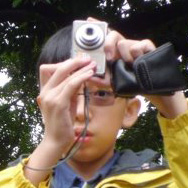

- Members →
- Yudong
- Yi Zhe
- Hsien En
- Jie Feng
Our Group Members and Reflections (Group 1-030)
Sun Yudong
My name is Yudong and I am the leader of the group. I am in class 2O2. My CCA is EC³. Although I find that this project is rather time-consuming, it has been rather enriching and interesting. The results that we found were all rather intriguing and may a times unexpected. This probably one of the most interesting and fun part of doing this experiment. It is just fascinating to find that things are different from the expected results. Through this project, I have also got an insight into lab work. through this project, I have also developed a stronger interest in Science. As the other members not not very knowledgable in Infocomm Technology, Jie Feng and I are the main coders of the website. I am also the main "computer guy". I have learnt quite a lot from the project, from not only Science, but also other important life skills, such as preseverance. |
See other group members: Koh Yi Zhe, Tan Hsien En, Ho Jie Feng
Koh Yi Zhe
This year’s projects day was particularly enriching for me. Being the first time entering a project under the Experimental research category, I learnt a lot. For instance, I learnt a more indept on Science, which I may only learn in a later part of my Secondary life. Things like doing experiments on bacteria, zone of inhibition, series dilution, and even the simplest like doing and pouring agar plates were interesting, and also prepared me early for the research pathway I want to head to later on. Besides having early exposure, I also learnt how to better make use of my time, and juggle and manage it well. With an extra burden of going to the SRC many times to check on results and experiment, lots of time is taken up. I have also picked up my planning skills, such that the next day, experiments can be more effectively, and less time consuming. I will certainly go for Experimental Research next year. |
See other group members: Sun Yudong, Tan Hsien En, Ho Jie Feng
Tan Hsien En
|  | My name is Hsien En from class 2O2, and I am a member of the group. Assuming the role of the “secretary”, I coordinate and plan meeting dates, track and update our progress with our mentors, drafting and sending emails etc. I also take charge when the group leader is not around. This project has been rather interesting, as I have learnt many things about biology science experiments. I managed to do things that I thought only scientists could carry out. The process of carrying out the experiments is more time-consuming and tedious than we expected, with us working hard in the lab during the June Holidays. I have also learnt that the cooperation and commitment is important in getting the work done. We sometimes have to sacrifice our personal time and put the group above our own interests. |
See other group members: Sun Yudong, Koh Yi Zhe, Ho Jie Feng
Ho Jie Feng
I am Ho Jie Feng from class 2O4. Through this project, I had learnt many things, it is really an interesting project to do, with many different kinds of experiments. Since this is my first time doing biology experiments, I also found it very interesting to learn and really do hands-on experiments. At first, our mentor had described the experiments as easy, but after really doing it ourselves, there were many things to look out for and it was time-consuming. Since my schedule was very tight, I had to find time to do the experiment. Overall, I feel that all those time put into our experiments had paid off and I had gotten into finals, which is totally worth it. This project also sharpened my time management skills and made me manage my time more appropriately. Basically Yudong and I are the main coders of the website. |
See other group members: Sun Yudong, Koh Yi Zhe, Tan Hsien En